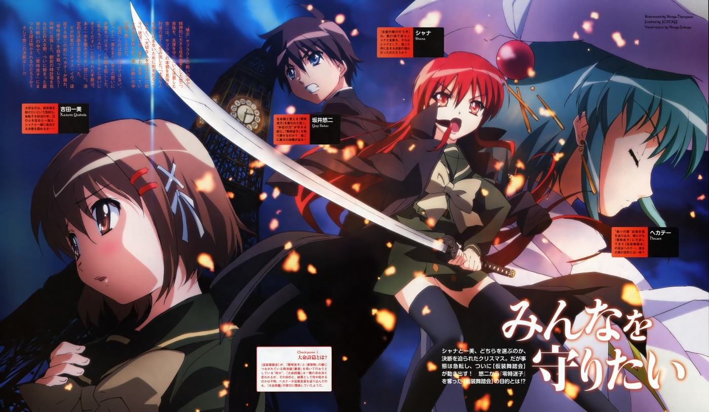

<ion-view view-title="发现" cache-view="false">
  <ion-header-bar class="bar-dark">
    <h1 class="title">发现</h1>
  </ion-header-bar>
  <div  class="carousel slide" data-ride="carousel" style="position: relative;top: 40px">
    <!-- 活动指示器 -->
    <ol class="carousel-indicators">
      <li data-target="#carousel-example-generic" data-slide-to="0" class="active"></li>
      <li data-target="#carousel-example-generic" data-slide-to="1"></li>
      <li data-target="#carousel-example-generic" data-slide-to="2"></li>
    </ol>

    <!-- 轮播项 -->
    <div class="carousel-inner" role="listbox">
      <div class="item active">
        
        <div class="carousel-caption">
        </div>
      </div>
      <div class="item">
        
        <div class="carousel-caption">
        </div>
      </div>
      <div class="item">
        
        <div class="carousel-caption">
        </div>
      </div>
    </div>

    <!-- 选择器 -->
    <a class="left carousel-control" href="#carousel-example-generic" role="button" data-slide="prev">
      <span class="glyphicon glyphicon-chevron-left"></span>
      <span class="sr-only">Previous</span>
    </a>
    <a class="right carousel-control" href="#carousel-example-generic" role="button" data-slide="next">
      <span class="glyphicon glyphicon-chevron-right"></span>
      <span class="sr-only">Next</span>
    </a>
  </div>

  </div>

  <div class="content has-header">

<div class="row">
    <div class="col">
      <div class="col-demo">悠唐天下</div>
    </div>
</div>

    <div class="row">
  <div class="col">
    <span class="glyphicon glyphicon-volume-up"></span>
    <span class="col-demo">官方公告</span>
  </div>
  <div class="col">
    <span class="  glyphicon glyphicon-thumbs-up"></span>
    <span class="col-demo">论坛精华</span>
  </div>
</div>

    <div class="row">
      <div class="col">
        <span class="glyphicon glyphicon-time"></span>
        <span class="col-demo">游戏讨论</span>
      </div>
      <div class="col">
        <span class="  glyphicon glyphicon-question-sign"></span>
        <span class="col-demo">新手问题</span>
      </div>
    </div>


  <div class="row" id="myrow">
    <span class="glyphicon glyphicon-globe"></span>
    <div class="col">有糖中心</div>
  </div>

    <div id="div1">

    </div>
  </div>
</ion-view>

